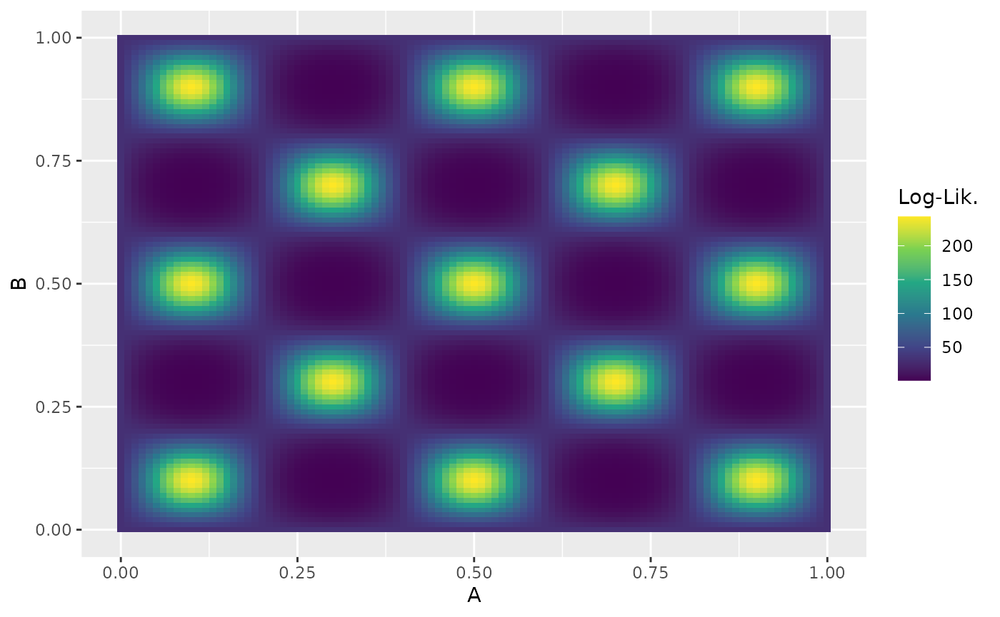
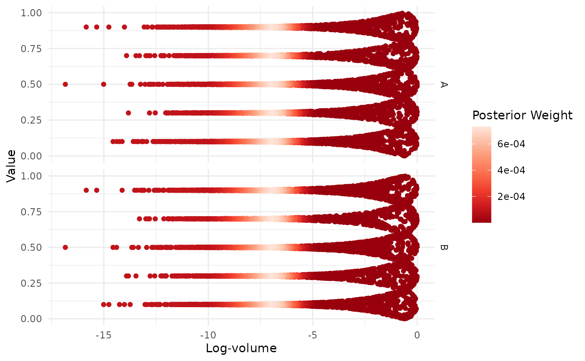
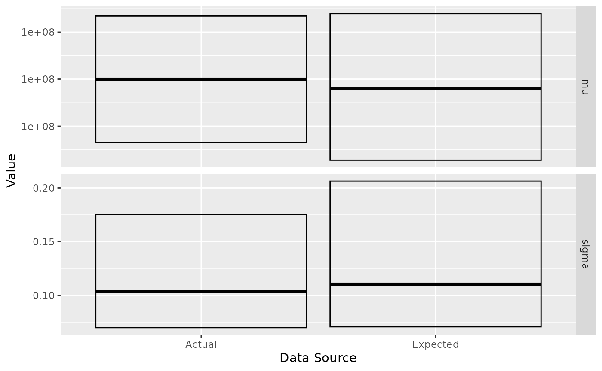

This vignette describes the test problems used by ernest to validate
its sampling behaviour. By reading this, you will learn how different
models can be expressed within ernest and how to examine the
ernest_run produced by a sampling run.
Multimodal Bivariate Gaussian “Blobs”
From the Python package nestle.
The goal is to estimate the evidence of a multimodal distribution, made up of a mixture of two well-separated bivariate Gaussian distributions. As nested sampling is designed to handle multimodal distributions, this provides a good test of ernest’s ability to explore a complicated likelihood surface.
# Log-likelihood for two Gaussian blobs
sigma <- 0.1
mu1 <- c(1, 1)
mu2 <- -c(1, 1)
sigma_inv <- diag(2) / 0.1**2
gaussian_blobs_loglik <- function(x) {
dx1 <- -0.5 * mahalanobis(x, c(1, 1), sigma_inv, inverted = TRUE)
dx2 <- -0.5 * mahalanobis(x, c(-1, -1), sigma_inv, inverted = TRUE)
matrixStats::colLogSumExps(rbind(dx1, dx2))
}
# Uniform prior over [-5, 5] in each dimension
prior <- create_uniform_prior(lower = -5, upper = 5, names = c("A", "B"))
# Run the model
blob_sampler <- ernest_sampler(
create_likelihood(vectorized_fn = gaussian_blobs_loglik),
prior,
nlive = 100,
seed = 42L
)
blob_result <- generate(blob_sampler, show_progress = FALSE)The expected log-evidence, found analytically, is . We may use the summary and calculate methods to examine how accurate our results from sampling are:
summary(blob_result)
#> Summary of nested sampling run:
#> ── Run Information ─────────────────────────────────────────────────────────────
#> * No. points: 100
#> * Iterations: 967
#> * Likelihood evals.: 21526
#> * Log-evidence: -6.6241 (± 0.2633)
#> * Information: 5.618
#> * RNG seed: 42
#> ── Posterior Summary ───────────────────────────────────────────────────────────
#> # A tibble: 2 × 6
#> variable mean sd median q15 q85
#> <chr> <dbl> <dbl> <dbl> <dbl> <dbl>
#> 1 A -0.127 1.51 -0.749 -1.15 1.18
#> 2 B -0.125 1.48 -0.772 -1.12 1.14
#> ── Maximum Likelihood Estimate (MLE) ───────────────────────────────────────────
#> * Log-likelihood: -9e-04
#> * Original parameters: -0.996 and -1.0013
calculate(blob_result, ndraws = 500)$log_evidence |>
tail(1)
#> rvar<500>[1] mean ± sd:
#> [1] -6.6 ± 0.23Eggbox Distribution
From the Python package nestle.
The eggbox likelihood is another useful test case that demonstrates ernest’s ability to properly integrate across multimodal likelihood surfaces.
# Log-likelihood for the eggbox function
eggbox_loglik <- function(x) {
tmax <- 5.0 * pi
if (!is.matrix(x)) dim(x) <- c(1, length(x))
t <- sweep(2.0 * tmax * x, 2, tmax, "-")
(2.0 + cos(t[, 1] / 2.0) * cos(t[, 2] / 2.0))^5.0
}
# Uniform prior over [0, 1] in each dimension
eggbox_prior <- create_uniform_prior(names = c("A", "B"))
Analytic results indicate that we should expect a log-evidence of .
egg_sampler <- ernest_sampler(
eggbox_loglik,
eggbox_prior,
sampler = multi_ellipsoid(),
seed = 42L
)
#> Warning in rgl.init(initValue, onlyNULL): RGL: unable to open X11 display
#> Warning: 'rgl.init' failed, will use the null device.
#> See '?rgl.useNULL' for ways to avoid this warning.
egg_result <- generate(egg_sampler, show_progress = FALSE)
summary(egg_result)
#> Summary of nested sampling run:
#> ── Run Information ─────────────────────────────────────────────────────────────
#> * No. points: 500
#> * Iterations: 5025
#> * Likelihood evals.: 11465
#> * Log-evidence: 235.9742 (± 0.119)
#> * Information: 5.956
#> * RNG seed: 42
#> ── Posterior Summary ───────────────────────────────────────────────────────────
#> # A tibble: 2 × 6
#> variable mean sd median q15 q85
#> <chr> <dbl> <dbl> <dbl> <dbl> <dbl>
#> 1 A 0.507 0.300 0.500 0.102 0.899
#> 2 B 0.479 0.301 0.498 0.101 0.899
#> ── Maximum Likelihood Estimate (MLE) ───────────────────────────────────────────
#> * Log-likelihood: 242.9998
#> * Original parameters: 0.5 and 0.5We can further visualize the multimodal structure of each variable:
visualize(egg_result, .which = "trace")
Incorporating Data within Likelihood Functions
Nested sampling runs are capable of generating estimates of the posterior distribution. To examine this, we provide a test problem from the National Institute of Standards and Technology (NIST).
y <- c(0.2, 0.1, 0.3, 0.1, 0.3, 0.1, 0.3, 0.1, 0.3, 0.1) + 1e+08The certified posterior quantiles for the mean and standard deviation
of y are:
| Parameter | 2.5% | 50.0% | 97.5% |
|---|---|---|---|
| mu | 100000000.13281908588 | 100000000.20000000000 | 100000000.26718091412 |
| sigma | 0.069871704416342 | 0.103462818336964 | 0.175493354741336 |
To run this model, we must incorporate the data y into
the likelihood function. We do this through a function factory that
captures a vector of observations from its environment. The produced
function then computes the log-likelihood of a Gaussian model with
parameters mean mu and standard deviation
sigma.
gaussian_log_lik <- function(data) {
force(data)
function(theta) {
if (theta[2] <= 0) return(-Inf)
sum(stats::dnorm(data, mean = theta[1], sd = theta[2], log = TRUE))
}
}
log_lik <- gaussian_log_lik(y)
prior <- create_uniform_prior(
names = c("mu", "sigma"),
lower = c(1e+08 - 1, 0.01),
upper = c(1e+08 + 1, 1)
)
nist_sampler <- ernest_sampler(log_lik, prior, seed = 42L)
nist_result <- generate(nist_sampler, show_progress = FALSE)We rely on the posterior R package to examine the posterior distribution by summarizing each variable by its quantiles. To better visualize the correspondence between the expected and actual values, we can plot their respective IQRs.
post <- as_draws(nist_result) |>
resample_draws() |>
summarise_draws(\(x) quantile(x, probs = c(0.025, 0.5, 0.975)))
post
#> # A tibble: 2 × 4
#> variable `2.5%` `50%` `97.5%`
#> <chr> <dbl> <dbl> <dbl>
#> 1 mu 1.00e+8 100000000. 100000000.
#> 2 sigma 7.07e-2 0.110 0.207#> # A tibble: 4 × 5
#> variable `2.5%` `50%` `97.5%` src
#> <chr> <dbl> <dbl> <dbl> <chr>
#> 1 mu 1.00e+8 100000000. 100000000. est
#> 2 sigma 7.07e-2 0.110 0.207 est
#> 3 mu 1.00e+8 100000000. 100000000. act
#> 4 sigma 6.99e-2 0.103 0.175 act